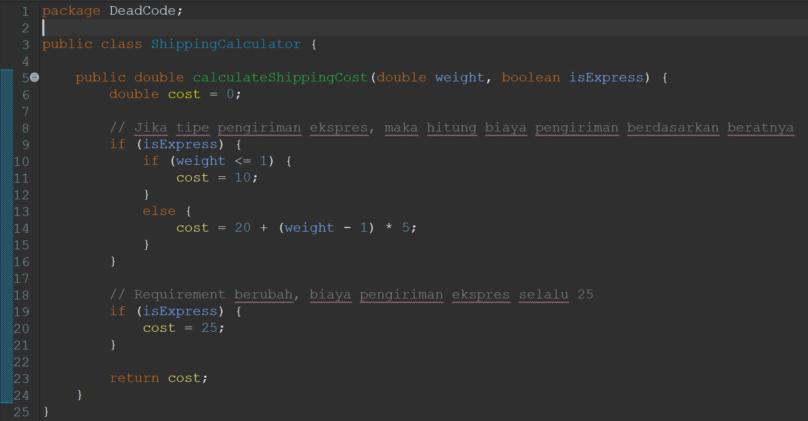
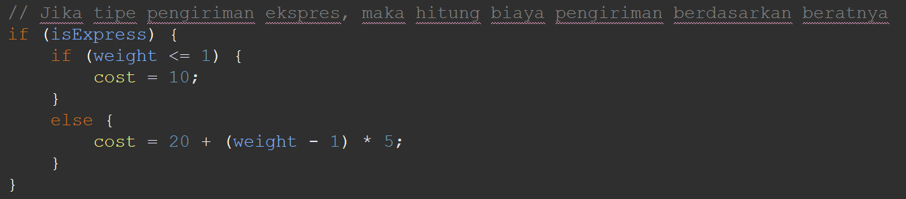
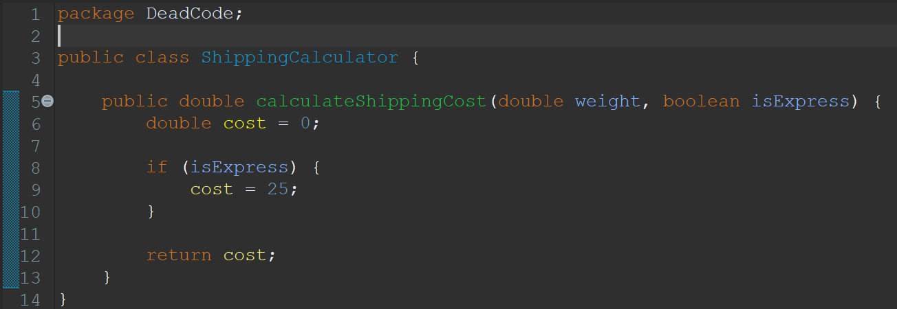
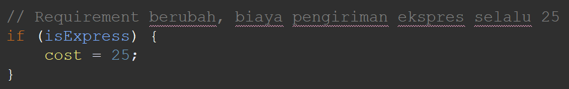

Dead Code
Definisi
Dead Code adalah sebuah code smell yang terjadi ketika ada bagian code yang tidak pernah dieksekusi atau tidak memberikan kontribusi pada fungsionalitas program. Code semacam ini mungkin disisipkan secara tidak sengaja atau merupakan sisa dari implementasi logika bisnis sebelumnya yang tidak lagi diperlukan dan lupa untuk dihapus.
Contoh
Before
Code:
ShippingCalculator.java
Alasan:

Bagian code ini dapat diabaikan karena karena di bagian bawah dari kondisi ini terdapat penetapan biaya pengiriman sebesar 25, yang membuat perhitungan biaya pengiriman ini menjadi tidak berguna.
After
Code:
ShippingCalculator.java
Hasil Perbaikan:
Kita akan menghapus bagian code di atas dan menyisakan bagian code di bawah saja.
